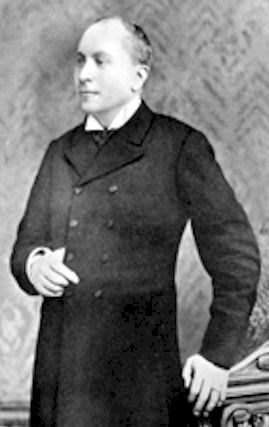

THE PRESCRIBER
by John Henry Clarke
Presented by Médi-T.Main * A * B * C * D * E * F * G * H * I * J * K * L * M * N * O * P * Q * R * S * T * U * V * W * Y * Z
Preface. * Introduction : How to practise homeopathy - Case-taking - The plan of the Prescriber and how to use it - List of remedies, abbreviations and signs * Toothache : Repertory and Reversed Repertory.
PART III. - PLAN OF THE PRESCRIBER, AND HOW TO USE IT.
1. The Plan.
2. Rules for Prescribing.
3. Examples of Prescriptions.1. THE PLAN.
The plan of the work is simple. The names of the diseases are given in alphabetical order : and where a disease has more names than one, each name is given with a reference to the one under which the treatment is described. This will generally be found to be the name by which it is most commonly known. Under each heading the names of the medicine or medicines most useful in the particular disease are given. When more medicines than one are named, there will be found prefixed to each the symptoms which would lead the prescriber to choose that in preference to the rest. Where no such differentiating symptoms can be given, the medicines are named in the order of their general applicability, and numbered ; it is intended that the prescriber shall use them in that order, if there are no other symptoms in the case pointing to one more than the other.
Where a number of symptoms are given as belonging to one medicine, these will be found separated either by commas or semicolons. All those only separated by commas belong to a single group, and these must all be present in order to indicate the medicine. For example ; under Sciatica will be found, "Pains made worse by sitting, relieved somewhat by walking, entirely by lying down, Am. mur. :" this means that Ammonium muriaticum is indicated when the pain of sciatica is marked by all these characters. If in any case the pain were noted as being "relieved somewhat by walking," without the other two, the medicine would probably not be appropriate. Again, under the same heading we have : "Purely neuralgic ; accompanying paralysis ; in old and debilitated subjects, Ars. :" this means that Arsenic is likely to benefit all cases that are of a purely neuralgic kind, as opposed to inflammatory or rheumatic ; also sciatica in patients suffering from paralysis, also sciatica in old and debilitated patients. Each characteristic is sufficient in itself to indicate the medicine, and this the semicolons are intended to show ; should two of the characteristics, or all three, be found in the same patient, the medicine would be still more strongly indicated. But it must be understood that all the medicines given under any heading have a distinct specific relation to the part or the affection under consideration ; and whilst I have sought to give the distinguishing traits of each drug, that the best medicine may be chosen first, still all the medicines are more or less homœopathic, and if one fails, the one which seems next in appropriateness should be tried. But it must always be borne in mind that the whole of the symptoms of any patient must be taken into consideration, and not the most urgent only. The drug which corresponds best to the totality of a patient's symptoms will be the most certain to cure.
Under certain headings, such as Tongue, Taste, Smell, etc., I have given some characteristic conditions, which, however, do not in themselves constitute disease. They occur as symptoms in various diseases, and as the result of the action of certain drugs, and are often useful in determining the choice of a medicine, if that medicine is in relation to the case as a whole. For example, if a prescriber is in doubt which of two medicines to give in a case of dyspepsia, a reference to the heading Tongue may show which of these medicines is capable of producing a condition of tongue most like that present and determine the choice.
2. RULES FOR PRESCRIBING.
Having found the medicine which corresponds to the case, there remains the questions of attenuation, dose, and frequency of repetition. In these matters dogmatism is out of place, and every man's experience is his best guide. But some guidance is needed before experience is available, and this I have tried to give. In the matter of attenuation, my own experience leads me to believe that all attenuation, from the mother-tincture upwards, are curative, provided the choice of the medicine is correct. When the similarity is very close between drug symptoms and patient's symptoms, the attenuation cannot be too high to cure, and the higher it is the more permanent the cure is likely to be. But the question of attenuation is secondary to that of the selection of the drug.
It is taken for granted that the reader possesses at least an elementary acquaintance with homœopathic pharmacy. It will be sufficient to state here that the sign Ø following the name of a medicine stands for the strongest preparation of the drug (the sign θ is also used in the same sense by some writers) and the numbers 1, 2, 3, etc., or 1x, 2x, 3x, etc., for the different attenuations. The figures 1, 2, 3, etc., refer to the centesimal attenuations ; the proportion being in "1," one part of the strongest preparation of the substance to 99 of the attenuating medium, and in "2," one part of "1" to 99 parts of the attenuating medium, and so on. The figures 1x, 2x, etc., refer to the decimal scale of attenuation ; "1x" meaning one part of the strongest preparation to 9 parts of the attenuating medium, 2x one, part of lx to 9 parts of the attenuating medium, and so on.
1. The Attenuation. -After the name of each medicine there will be found the number of the attenuation recommended. When several attenuations are believed to be equally efficacious, the numbers of the lowest and the highest are given, and a bar is placed between them. For example, "Acon. 1-3" would mean Acon. 1, 3x, 2, or 3, and the prescriber may select any one of those as he thinks fit. When the choice lies between two only, the two numbers are joined by an "or" : as "Cham. 1 or 6." When no sign or figure follows the name of a medicine the pure substance is meant : e.g., "Kali i. gr. ii." means two grains of the iodide of potassium itself.
2. The Dose. -In all cases where no, mention of dose is made, one drop of the tincture, or one pilule or tablet is intended. The choice between tinctures and pilules is one of convenience chiefly. When tinctures are preferred, one or two drops to a tea, spoonful or a dessert-spoonful of water is the proper dose, or, if given in powder, one or two drops to a sufficient quantity of sugar of milk. Distilled water, or water that has been boiled, is preferable to tap-water. When triturations are intended, this is always indicated by the number of grains for a dose following the number of the attenuation. For example, "Silic. 3, gr. iii." means three grains of the third trituration of Silica. Triturations may be given-dry on the tongue, or suspended in water, as preferred by the patient.
3. The Repetition of the Dose. -For the sake of simplicity and uniformity, the times of the repetition of the dose are given in terms of hours and minutes. After the name of a medicine with its attenuation, "l h." means that the medicine is to be given every hour ; "2 h." every ; two hours ; "6 h." every six hours, or four times a day ; "8 h." every eight hours, or three times a day ; "10 m." every ten minutes.
In acute cases HAHNEMANN directs that the medicine should be given at short intervals, in chronic cases at longer. The rule laid down was to give one dose in a chronic case, and wait until its effects were exhausted. This may be done in some cases ; in others it is well to repeat the dose at short intervals until a decided effect is produced, and then wait until the action is exhausted before again repeating it. If the same symptoms return the same remedy must be repeated ; if they are changed, a different remedy must be sought.
In the latest edition of the Organon, the sixth, Hahnemann taught that the cure of chronic cases could be expedited by repetition of the remedy, but before each dose the bottle containing the mixture should receive ten forcible succussions. In this way the potency is raised with each dose, and the remedy can be repeated without fear of troublesome aggravations. The practice of prescribing medicine mixed already by the chemist is thus preferable to that of ordering quantities of the tincture to be mixed at home.
 The practice of giving a single dose and allowing time for it to evolve its action is an excellent one when it is possible to carry it out and observe the effects. Dr. R. T. Cooper treated many cases of chronic disease with great effect by administering unit doses of Ø tinctures, allowing them to act for two or three weeks without repetition. Dr. Cooper directed that the dose should be taken on an empty stomach -at least two hours after a meal, no food to be taken for at least one hour after the dose.
4. The Time of Day. -The best time for giving medicine (when the repetition of the dose is not too frequent to allow of choice) is from an hour to half-an-hour before food. In ordering a medicine every six hours (four times a day) the first dose may be given on rising, the second an hour before lunch, the third an hour before dinner, and the last at bedtime. An exception must be made in the case of the lower attenuations of Arsenic and Iron. These should be given immediately after food.
5. Alternation. -Remedies may sometimes be alternated with advantage, but this should not be adopted as a routine method. If two medicines seem almost equally indicated it is best to decide upon one of them, and give that. When the prescriber has seen whether it answers his expectations or not, he will be able to decide on the propriety of giving the other. To give both at the same time destroys the value of the observation, and tends to weaken the prescriber's powers of diagnosing the remedy.
6. Sleep. -Except in dangerous acute cases patients should not be awakened from sleep to receive their medicine. When it is necessary to give the dose during sleep, it is often possible to do it without arousing the patient.
3. EXAMPLES OF PRESCRIPTIONS.
1. Acon. 3, 4 h. This may be ordered from a homœopathic chemist in this way :
Acon. 3, gtt. lxii.
Aquæ puræ 6 ounces.
Misce. Signetur, 3ii., quartis horis.(Take of Acon. 3, seventy-two drops. Of pure water six ounces. Mix. Direct :- A dessertspoonful every four hours.) or if ordered in the tincture form :-
Tinct. Acon. 3, 2 drachms.
Signetur, gtt. iii. ex aqua 2 drachms, quartis horis.(Take of Acon. 3 two drachms Direct. :- Three drops in a dessertspoonful every four hours.)
If a mixture is desired free from alcohol it may be ordered thus :
Acon. 3 (or 30), glob. x.
Aquæ purse N. Solve.
Signetur : 2 drachms, quartis horis.(Take of Acon. 3 (or 30) ten globules, of pure water six ounces. Dissolve. Direct. :- A dessertspoonful every four hours.)
If it is proposed to give the dose in powder form it may be ordered in this way : Take of Tincture of Aconite three drops, of Sugar of Milk a sufficient quantity. Make a powder ; send of such twenty-four (or whatever number is desired.) One powder on the tongue every four hours.
If pilules (or tablets or discs) are intended to be given, the prescription would be as follows :-
Take of pilules (or tablets or discs) of Aconite 3, two drachms. One pilule (or tablet or disc) to be taken every four hours.
2. Silic. 3x, gr. iv. 6 h.
This may be expanded as follows :-
Take of trituration of Silica 3x four grains ; make a powder ; send of such twenty-four. One powder to be taken four times a day. Or Take a trituration of Silica 3x two drachms, or a quarter of an ounce. As much as would lie on a six-penny piece to be taken four times a day. (Small horn scoops are sold by the chemists made to hold one, two, or three grains each. In prescribing triturations it is often convenient to order one of these, and direct, "a scoopful to be taken," etc.). But it is more practical to order of the chemist as many powders as are likely to be required.
Bacill. 200, gl. iv. once a week.
This may be ordered as follows :
Take of Bacillinum 200 four globules ; of Sugar of Milk two grains. Make a powder. Send as many as required. One to be taken dry on the tongue once a week. Plain powders of Sach. Lact. may be ordered in the interval if the patient cannot be made to understand the prolonged action of single doses. Or if other medicines are called for by special symptoms, they may be given between the doses without interfering with the constitutional action of the remedy.
In giving remedies for chronic conditions it is a good plan to prescribe the doses at bed-time or on rising and at bed-time. The patient has then no need to be thinking of getting the doses in during the day. In giving doses at intervals of several days it is convenient to prescribe a series of numbered powders, directing them to be taken at bedtime or at bedtime and on rising as the case may be. I find it useful to make the prescription in this way :-
Thuja (30 / 1, 8, 15, 22) gl. vi.
mitte xxiv., Sig. One to be taken at bedtime, in numerical order. This means that of the 24 powders, numbers. 1, 8, 15 and 22 have each six globules of the remedy. The rest of the powders are not directly medicated, but that does not mean that they are not medicated at all. According to my observation they are medicated by contact in varying degrees and their variation is rather helpful than otherwise in developing the curative action of the remedy.
Copyright © Médi-T 2003